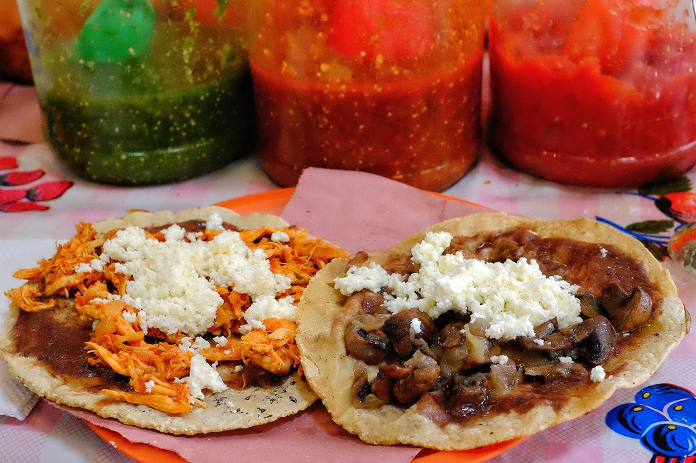

Chicken Tinga

Description:
This recipe is simple to make and has minimal ingredients so its appropriate for weeknight meals
Just be ready to have a blender on hand
Ingredients: (Copied from
- 3 ½ lb chicken breasts
- 3 white onion, 1/2 in chunks, the rest thinly sliced
- 6 cloves garlic
- 3 bay leaves
- 1 tbsp salt
- 2 tsp black pepper
- 5 Roma tomatoes
- 4 chipotle peppers in adobo + some of their sauce (use the entire can like me for more spice)
- ½ tsp cumin
- 1 tsp Mexican oregano
- 2 tbsp Mazola Corn Oil
- For serving (tostadas, refried beans, shredded cabbage, diced tomatoes, crumbled queso fresco or cotija, Mexican crema or sour cream)